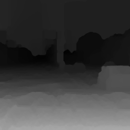
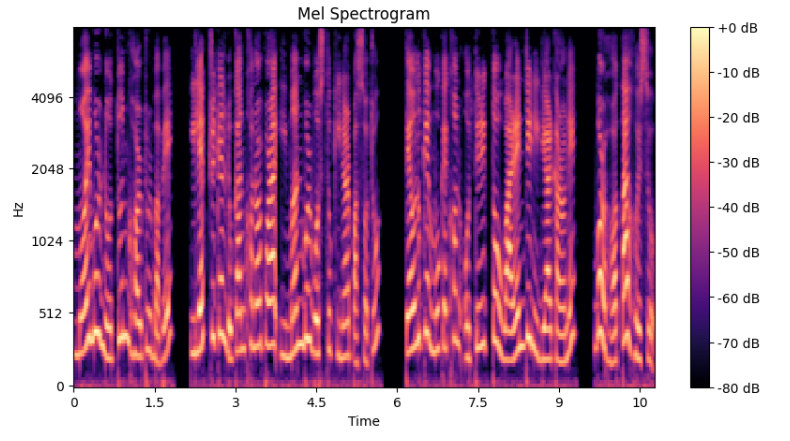

I’m Aniket.
Data science | Music | Remote Sensing
Working at the intersection of remote sensing, bioacoustics and deep learning.
Recent Work
- Kaggle: Denoisy for in-browser low light photo denoiser
- Article: Recommendation Engines and Feelings - Towards Data Science
- Article: Building a Cloud-Free Landsat Pipeline For Remote Sensing Analysis
- IITM: EduSync - Application leveraging GenAI for student management and tracking

Denoisy Image super resolution and denoising interface for low light images.

Cloud Removal with CMSN Implementation of a Coarse to Refined Network to evaluate the NDVI Values.

Agri-scene classifier using simCLR Implementation of SimCLR using a Resnet-18 backbone identification of suitable areas for agricultural activities.
Fake News Detection in Malayali Languages using custom designed neural network architecture, logistic regression and random forest classifier.
Depth Estimation Generating depth maps from challenging low-light captures.
AI-Generated speech Detector across 16 Indian languages.